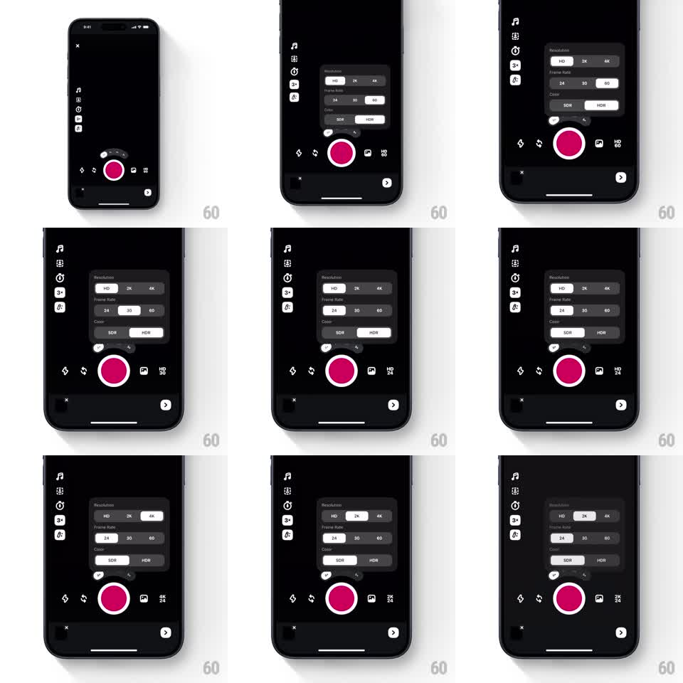

Media
Frame-by-frame

Rebuild this interaction 1:1: the Edits camera resolution menu - tapping the format badge opens a settings menu with springy segmented control rows (Resolution: HD / 2K / 4K, Frame Rate: 24 / 30 / 60, Color: SDR / HDR); each selection animates a highlight pill, and the menu collapses back into the compact status badge beside the record button.

Rebuild this interaction 1:1: the Edits camera resolution menu - tapping the format badge opens a settings menu with springy segmented control rows (Resolution: HD / 2K / 4K, Frame Rate: 24 / 30 / 60, Color: SDR / HDR); each selection animates a highlight pill, and the menu collapses back into the compact status badge beside the record button.
## Integration
Integration: stack-agnostic spec - springs given as stiffness/damping, timed motions as duration + curve; map every value to your framework and animation library of choice.
## Scene
Dark camera UI: left tool rail, pink record button at bottom center, and a small "HD 60" style badge to its right. The opened menu: a dark rounded panel above the record button with three labeled rows - Resolution (HD, 2K, 4K), Frame Rate (24, 30, 60), Color (SDR, HDR) - each a segmented control with a white highlight pill on the active segment.
## Motion spec
Pattern: expanding settings panel with segmented pill springs.
- Tap the badge: the menu expands from it (scale 0.6 -> 1 anchored at the badge, spring ~320/18, opacity in 150ms), rows staggering in (60ms apart, translateY 8pt -> 0).
- Tap a segment: the white highlight pill slides to it (spring ~340/16, slight overshoot) and the label inverts (black on white).
- Different rows can change independently; the badge text updates live ("4K 60", "2K 30", "HD 24") with a digit roll (150ms).
- Tap outside or the badge again: the menu collapses back into the badge (scale -> 0.6, spring ~320/20, rows fading out first, 120ms).
## Calibration
- The pill slide is the tactile star - quick with a small bounce, never sluggish.
- The panel stays pinned above the record button through all state changes.
## Reduced motion
Menu and pill crossfade between states (180ms).
## Don't miss
- The badge reflects the menu's choices immediately, even mid-collapse.
- Only one pill per row moves; the other rows stay put.